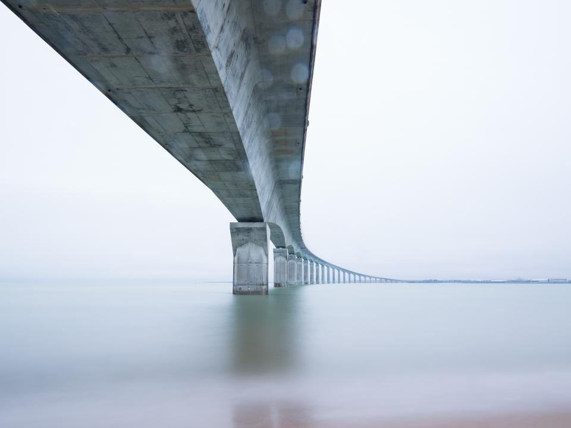
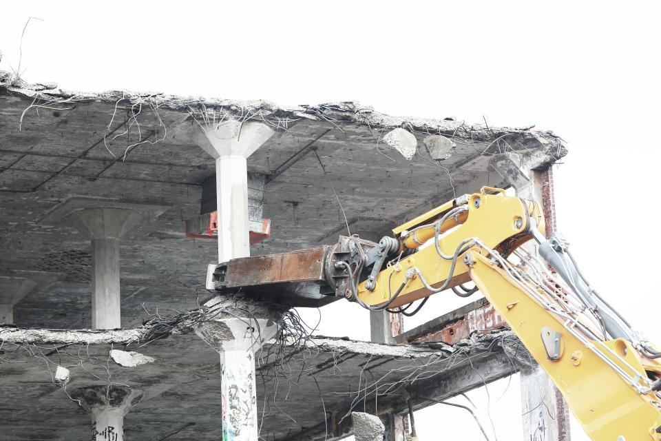
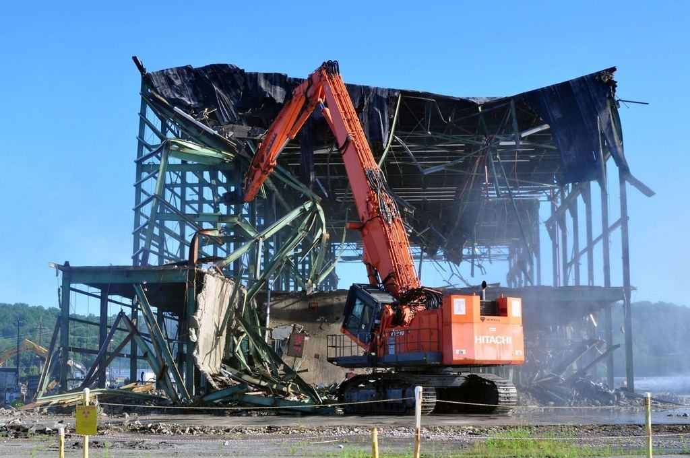
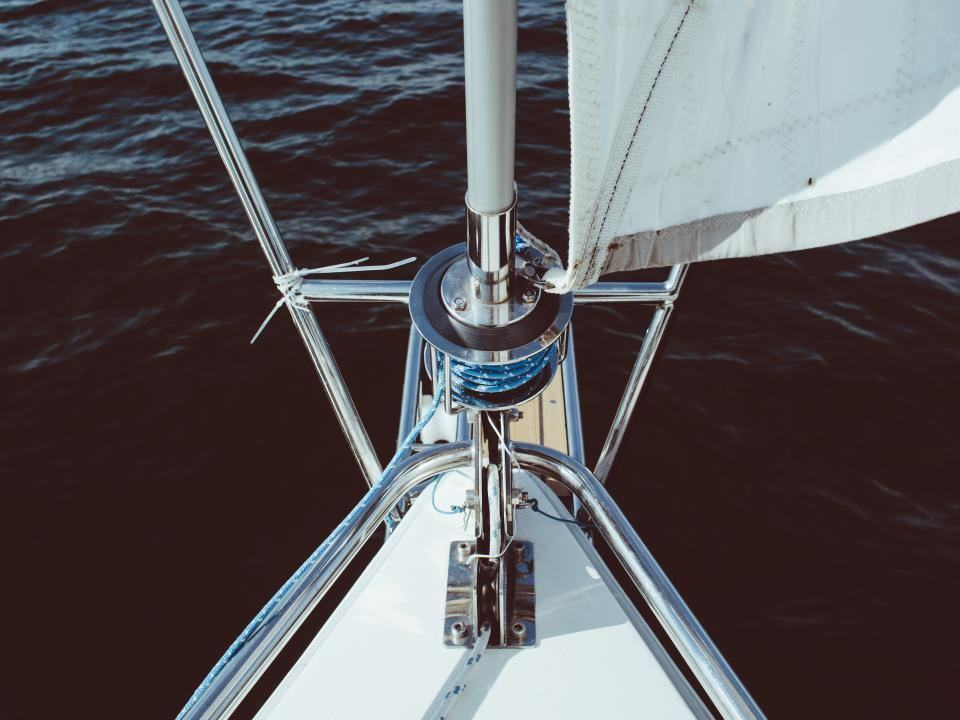
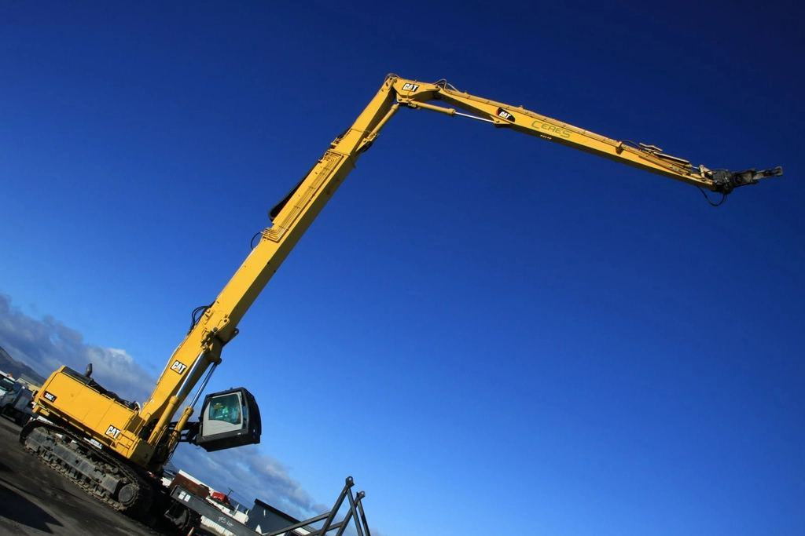

Referensuppdrag


”Jag har sett vad som ligger kvar på botten efter slarviga rivningar. Därför filmar vi varje uppdrag – både före och efter.”

Illustrationsbilder
Vad står i vattnet hos er?
Vi river kajer, bryggor och pirar från pråm och under ytan – i Blekinge och längs hela sydostkusten.
Våra tjänster- 01
Kajer och pirar
Betong- och stenkajer bilas, sågas och lyfts upp på pråm.
- 02
Bryggor och båthus
Trä- och betongbryggor i småbåtshamnar och på privata tomter.
- 03
Kreosotstolpar
Impregnerade pålar dras upp hela och hanteras som farligt avfall.
- 04
Undervattenssågning
Dykare sågar pålar och spont med wire och hydraulsåg under ytan.
- 05
Varvsbyggnader
Slipar, kranbanor och verkstäder i hamnområden.
- 06
Bärgning av båtar
Sjunkna fritidsbåtar och övergivna pråmar lyfts och skrotas.
- 07
Hamnar vi arbetat i
Från Sölvesborg i väster till Kalmarsund i norr.
- 08
Skicka sjökort
Markera platsen på sjökort eller karta, så ringer vi tillbaka.
Senaste veckorna på sjön

01/ 03Ångbåtskajen i Ronneby
120 meter betongkaj från 1934 är borta, och 2 600 ton sten ligger nu som erosionsskydd längs stranden.
Läs mer 02/ 03
02/ 03Fyrtio pålar på en dag
Dykarna sågade av en gammal ångbåtsbrygga vid Torhamn i ett enda arbetspass i stiltje.
Läs mer 03/ 03
03/ 03Pråmen Sturkö i trafik
Vår andra pråm har fått ny sax och klarar nu grunda vikar ned till en meters djup.
Läs mer

01Yrkesdykarcertifikat
Fyra dykare med certifikat för dykeriarbete enligt Arbetsmiljöverkets föreskrifter, och egen dykledare.

02Fartygsbefäl
Skepparna har behörighet från Transportstyrelsen för att föra arbetsfartyg i skärgården.
 03
03Kreosot som farligt avfall
Länsstyrelsen i Blekinge läns tillstånd att transportera kreosot och blyhaltigt kabelavfall.
 04
04ISO 14001 till sjöss
Miljöledningssystem med rutiner för grumling, oljespill och arbete i skyddade vattenområden.
Ingenting lämnas kvar på botten
Det är lätt att kapa en påle vid vattenlinjen och låta resten stå. Vi sågar alltid vid botten eller drar upp hela pålen, och vi filmar botten efteråt så att beställaren kan se resultatet. Under fiskelek från april till juni arbetar vi inte i grunda vikar.
Läs om hur vi arbetar 01100 %av uppdragen avslutas med bottenfilm
01100 %av uppdragen avslutas med bottenfilm 020kreosotpålar sågade i vattnet
020kreosotpålar sågade i vattnet
032 600 tkajsten återanvänd som strandskydd 2026
Illustrationsbilder
